Blockchain: The Most Misunderstood Technology
October 9, 2025 · blockchain, bitcoin
I am writing this article because I want to refresh my knowledge of the technology behind web3. For most people, web3 is simply a place where scammers gather, but I believe that blockchain is one of the most misunderstood technologies ever created. I will begin with the basics in chronological order, starting with Bitcoin, then move on to the development of Smart Contracts and Ethereum, and finish with a look at the intersection of AI and web3. 🚀
Table of Contents
Introduction
Bitcoin is a collection of technologies that form the basis for a new digital money ecosystem. You can use bitcoin in the same way you use traditional currencies, exchanging it with other people for goods or services. A user can prove ownership of a certain amount of bitcoin through a private key, which works like a password. This key can also be used to sign a transaction when the user wants to send bitcoin to someone else.
You can send bitcoin to a wallet by specifying the wallet address, which works a bit like an email address.
User keys are stored in what is called a wallet, which is an application that allows people to interact with the bitcoin network.
The bitcoin network is peer to peer (p2p), which means it is distributed and has no central authority. A user can sign and send transactions without needing permission from a bank, deciding freely how to use their own money.
How are bitcoin created?
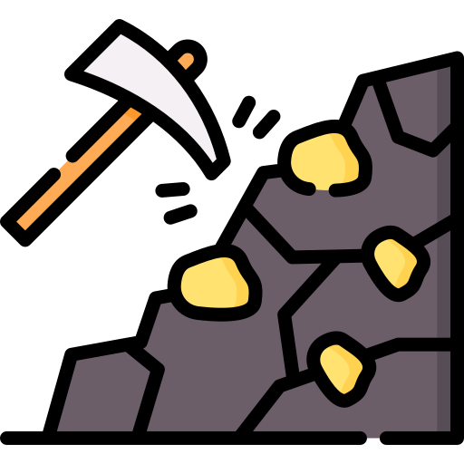
Through a process called mining, some users apply their computational power, using computers or servers, to solve complex mathematical problems. When they solve a problem, they are rewarded with new bitcoin. A miner is the only type of user who can validate transactions and record them permanently on the blockchain. In this way, miners take over the role of a central bank, but in a distributed form.
On average, every 10 minutes a miner validates the transactions by solving the mathematical problem. What happens when hardware becomes more powerful? The problem adjusts and becomes harder, so that a miner still wins on average every ten minutes 🧭
The bitcoin protocol defines a fixed maximum number of coins that will ever be created. That limit is close to 21 million and is expected to be reached by the year 2140.
What is the price of Bitcoin today? 💰 Check:
We said that the best way for a user to interact with the bitcoin network is through a wallet. These wallets can be grouped into three types:
- Full node client This client stores the entire history of transactions, meaning all transactions are replicated many times. That is why we can say transactions are set in stone. A full node can independently validate the entire blockchain and any transaction. However, storing a full node is computationally expensive.
- Lightweight client Also called SPV (simple payment verification). This client connects to a full node to access the bitcoin network and get transaction information. It stores the user wallet locally.
- Third party API client This type of client interacts with the network through APIs instead of connecting to the network directly.
Deep Dive into Bitcoin Mechanics
In this chapter you will understand how trust is achieved as an emergent property in the Bitcoin protocol. We don’t trust banks anymore 🏦, we trust nobody!
A blockchain explorer is great tool to better understand what is happening in the network. It is a tool that allows you to search for addresses, transactions and blocks.
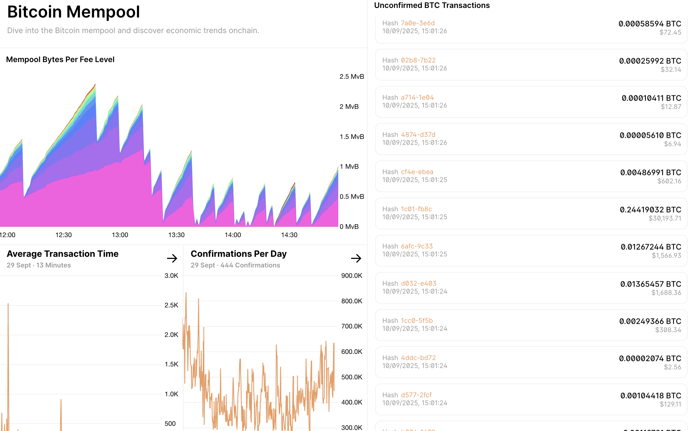
Some explorer:
Transactions
A transaction is a double entry, input and output, in a ledger.
- Input: specifies the amount and the owner (address) of the bitcoin
- Output: specifies the amount that the new owner will receive and its address
Output < Input, since the difference is the transaction fee that the user need to pay to miners for their work of validating the transaction and storing in a block in the blockchain
When I receive some money, then I am allowed to spend them again to buy something right? Meaning that the output of a transactions becomes the input of a new transactions, creating in this way a transaction chain.
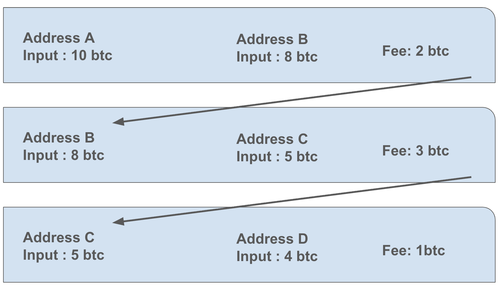
Common Transaction
In reality you can have multiple inputs and/or multiple outputs.
For example normally if A has 100 btc and wand to send 10 btc to B, it will send the rest 90 btc back to himself (A), so there are two outputs.
Aggregating Transaction
Aggregate several input in one output. It’s like when you change a lot of coins for a bill. Wallets use this to clean up smaller amounts of money
Distributing Transaction
One input, many outputs. Used for example when processing payments to employees.
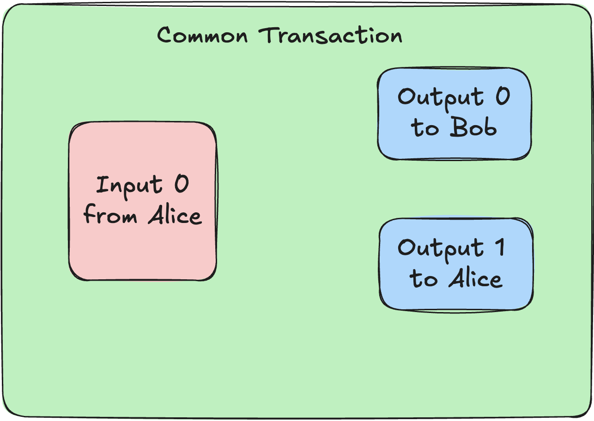
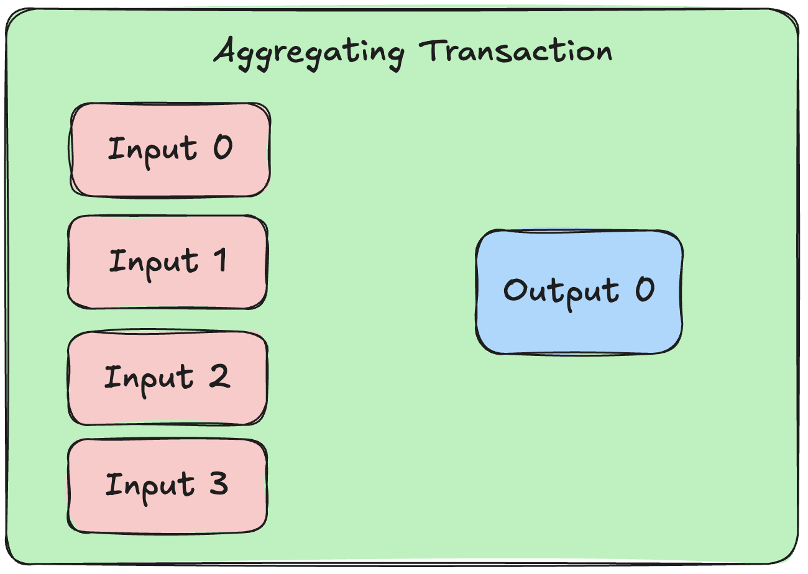
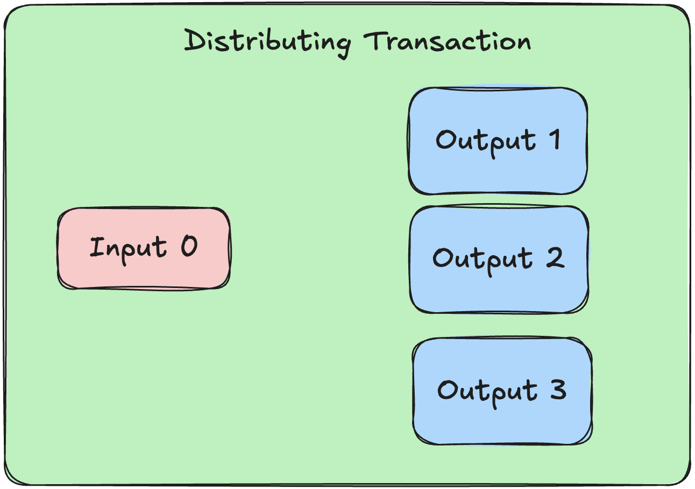
Constructing the transaction
A full- node has access to every transactions, so it can check all the “unspent” transactions (tsx) —> this is basically a user wallet, all the user unspent tsx.
Most clients are lightweights , so they connect to full-nodes, or the can ask the status of the network via API but the concept is the same.
So if we want to know what are the unspent tsx of the address 1HB5XMLmzFVj8ALj6mfBsbifRoD4miY36v we can call the service of blockchain.info via API.
curl https://blockchain.info/unspent?active=1HB5XMLmzFVj8ALj6mfBsbifRoD4miY36v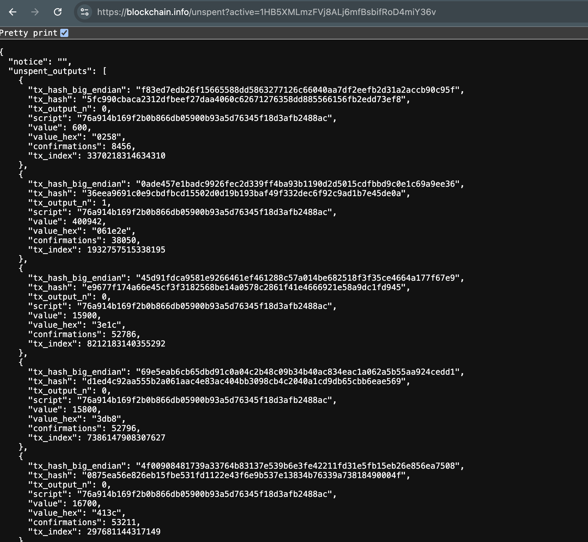
So if we sum the values of all these tsx we can get the total amount owned by these user associated to this address.
Each wallet address is associated to a pvt key. So when we send some amount of money to an address we are basically stating:
This output is payable to whoever can present a signature from the key corresponding to this address (public key) An address is also called public key, we’ll understand why
Transmitting the transaction into the network
Once the transaction is ready, it needs to be added to the ledger. First, we need to propagate the transaction into the bitcoin network.
The user creating the transaction can send it to any node in the network to which they are connected. This means A can send money to B even if their wallets are not directly connected in the network.
At this point, any bitcoin node that receives a valid transaction it has never seen before will propagate it to all other nodes it is connected to.
This propagation technique is called flooding.
A transaction will reach B’s wallet in a few seconds, and B will know that it is redeemable only with his private key.
Bitcoin Mining
The transaction sent by A in the bitcoin network, is not part of the blockchain until it is verified in a process called mining.
A lot of transactions are grouped into blocks, that nodes can mine using a lot of computation. The mining process has 2 ojectives:
- validating transactions
- creating new bitcoin, as reward for the computational task that requires a lot of electricity
Miners try to find a solution to a complicated mathematical puzzle that resets every time (10 minutes) a solution is found by some miner.
The process to find the solution is the so called Proof-of-Work (PoS).
The PoS basically consists in hashing (SHA 256) the block header (i.e the block ID) together with a random number, until the obtained number is smaller than a given number (by changing the given number, we change the difficulty of this challenge).
The first miner to find this solution can publish the block into the blockchain.
New transactions are constantly flowing into the network, and they are added to a temporary pool of unverified transactions maintained by each node. Miners get transactions in this pool, prioritising based on the transaction fee value, and group them into blocks that they try to mine.
I miner includes into the block also a special transaction with it’s own address which allows him to get the new bitcoins reward + the total amount of fees of all the transaction validated.
it is worth saying that each block contain in his own header a pointer to the previous block. So when a block is validated it is connected to the previous block, forming a chain.
It can happen that at the same time two blocks are validated so which one should we consider?
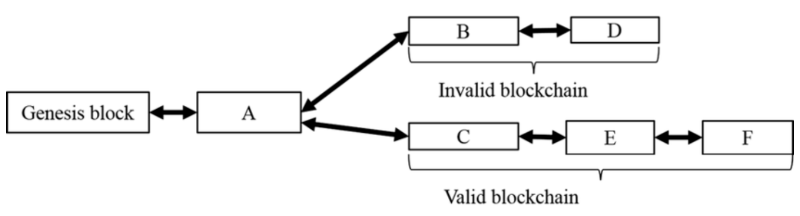
We wait for other miners to mine other blocks on top of block B or C (see image). By convention a block with more than 6 confirmation (6 blocks built on top) is considered irrevocable.
Keys and Addresses
Cryptography is a crucial part of bitcoin.
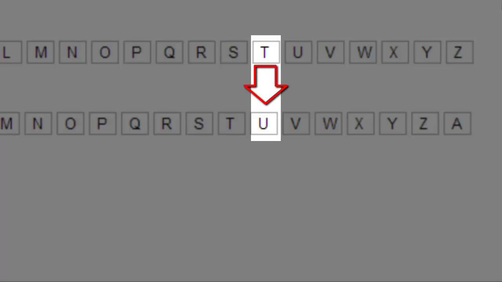
Cryptography can be used for:
- prove knowledge of a secret without revealing it (digital signature)
- prove authenticity of data (digital fingerprint)
A user Wallet is composed by two digital keys 🔑🔑
🔑 🟢 —> Public Key : it’s like the bank number, you can share it
🔑 🟠 —> Private Key: it’s like the PIN (password), to keep it private
During a payment, a recipient public key is represented by a digital fingerprint, called bitcoin address which is generated from the public key itself.
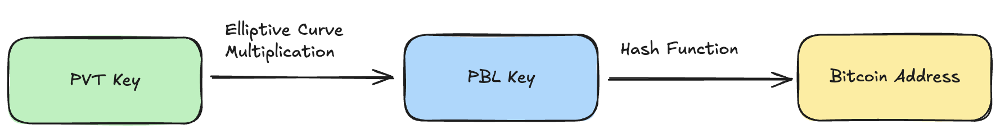
Public key Cryptography
In public key cryptography (1970), there are some functions that are easy to calculate in one direction but difficult to calculate in the opposite direction. This asymmetry guarantees trust.
Bitcoin uses elliptic curve multiplication as basis for its cryptography.
From a pvt key, we generate a unique pbl key
- pvt key —> used to sign transactions and spend funds
- pbl key —> used to receive funds
A private key is a random number between 1 and 2²56, and it looks like 5KxFakeSampleKeyNotReal1234567890abcdef1234567890abcdef12345678
The public key is generated from the private one using the elliptic curve multiplication: K = k * G
kis the pvt keyGconstant point called generator pointKis the pbl key
Given K, if you want to find k, you can only brute force, so its computationally hard, if these values are high, is basically impossible.
Elliptic Curve Cryptography
This is a type of public key (o asymmetric) cryptography.
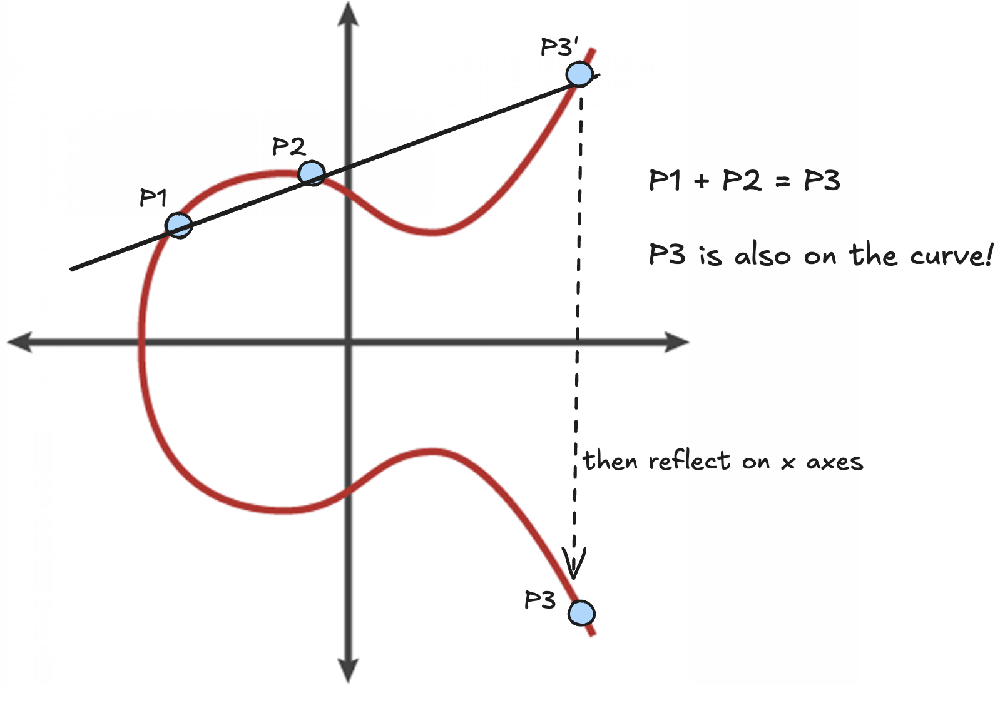
Bitcoin uses a specific elliptic curve called secp256k1, which is defined by the following function:
y² mod(p)= (x³ +7) mod(p)
p is a prime number, and indicates that this curve is over a finite field. It’s like the clock, in that case p is 12, so instead of saying 23 we say 11pm
In our case p is 2²⁵⁶-2³²-2⁹-2⁸-2⁷-2⁶-2⁴-1 which is a very large number.
So a point on this curve is defined by 2 coordinates such as:
x-coordinate: 26557396834603496405429715671000649890342828193837296682021408587325818683135y-coordinate: 111966831483317698639766129155297399177101885252094551915029716042625069463573
so these two numbers are a solution of the equation
Some basic properties of the elliptic curve:
- The addition on P1 and P2 gives P3 on the elliptic curve as the image above.
- the + is associative
- if P1 = P2, we draw the tangent and intersect the point P3 in this way
- There is a special point called “point at infinity” so that:
- if P1 is point at infinity → P1 + P2 = P2
- for a point P on the curve, and a number k, k*P = P + P + P …. (k times). k sometimes is called the “exponent”
How to generate a public key?
Given a random private key, which is a random number, curve, we multiply it for a given fixed G, the generator point and a point on the curve, to produce another point on the curve K , the pbl key.
Since G is always the same, whoever posses k can generate K.
k*G is like summing G to itself k times.

An Hash algorithm, is a one-way function to produce the fingerprint or hash of a given input.
Bitcoin applies two hash function on top of the public key to generate the bitcoin address. These functions are the SHA256 and the RIPEMD160 .
Address = RIPEMD160(SHA256(K))
The result is then encoded in Base 58 Check.
Wallets
Wallets are applications that store only the keys, the “coins” are stored into the blockchain instead.
Two type of wallets:
- non-deterministic walltet: each key is independently generated at random
- deterministic wallet: all the keys are derived from a single master key (easier to backup) known as seed, which is usually a mnemonic code words. Hierarchical deterministic (HD) wallets are the most advanced wallet of this kind, which derives keys from a seed in a tree structure.
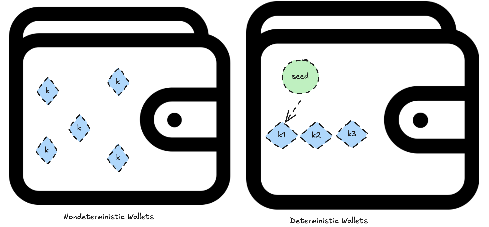
Transactions
Transactions are data structures that encode the transfer of value between users. Each transaction is a double entry in a public ledger or blockchain.
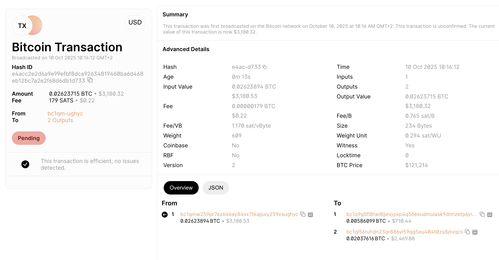
Transaction Outputs
Bitcoin full-nodes are able to track all unspent transactions, there are known as the unspent transaction outputs or UXTO.
So a user balance, is the sum of the UXTO spendable with his own key.
As a dollar can be divided in cents, a BTC can be divided in satoshis (1 SATOSHI is 0,000012 BTC).
Transaction outputs are discrete and indivisible. So if you have an UXTO worth 20 BTC and you want to pay 1 BTC, you must spend all 20 BTC instead. So you send 1 BTC to the real receiver, and 19 BTC back to yourself.
In each block there is a special transaction called coinbase, which is always the first transaction. This tsx is placed by the winning minerand creates new bitcoins as reward to the miner. So the coinbase trx does not consume UXTO, it has instead a special input called the “coinbase”.
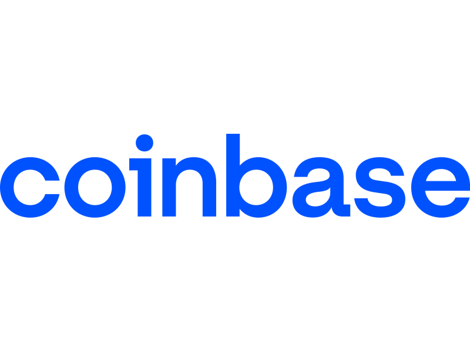
A transaction output consists of two parts:
- An amount of bitcoing expressed in satoshis
- A cryptographic puzzle that determines the conditions required to spend the output. Also called locking script, witness script or
scriptPubKey.
See exmple.
"vout": [
{
"value": 0.50000000,
"n": 0,
"scriptPubKey": "OP_DUP OP_HASH160 7f9b1a7fb68d60c536c2fd8b8a8f3f3e8c9d2e3f OP_EQUALVERIFY OP_CHECKSIG",
},
{
"value": 0.25000000,
"n": 1,
"scriptPubKey": "OP_HASH160 8a9b2c8d9e0f1a2b3c4d5e6f7a8b9c0d1e2f3a4b OP_EQUAL",
}
]Transaction Inputs
Transaction inputs identify which UXTO will be consumed and provide the proof of ownership through the unlocking script.
- The first part of a transaction input is a pointer to an UXTO by reference to the transaction hash and an ouptut index, which identifies the UXTO in that transaction.
- The second part is the unlocking script which is a digital signature and public key proving ownership of the bitcoin.
"vin": [
{
"txid": "1234567890abcdef1234567890abcdef1234567890abcdef1234567890abcdef", #reference transaction
"vout": 0, # UXTO in transaction
"scriptSig": "3044022047ac...D43 ", #condition to unlock spend
},
"sequence": 4294967295
}
]So, in order to understand if the unlocking script is valid, full nodes need also to retrieve the referenced UXTO.
Transaction Fees
Transactions include also a fee which serve as an incentive to include (mine) the transaction into the next block. Fees are collected by the miners.
Fees are calculated based on the size of the tx in kilobytes, not on the amount of btc sent.
Miners prioritise transactions with higher fees. What should be the amount of the fee to be sure the tx gets mined?
There are fee estimation algorithms that calculates the appropriate fee based on “competitor” transaction fees, you can use third party services that provide this estimate.
Bitcoin Fees Now, #1 Estimator and Fee Calculatorbitcoinfees.net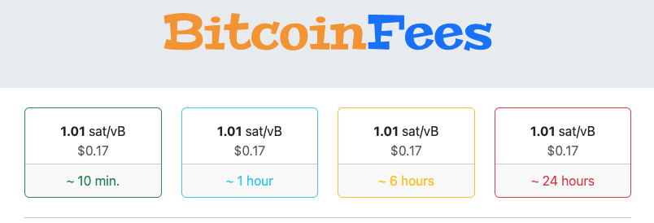
- Fee Rate: All options list a fee of 1.01 satoshis per virtual byte (sat/vB), which is the cost per byte of transaction data.
- Cost in USD: Each option estimates the fee at $0.17, reflecting the current value of 1.01 sat/vB based on Bitcoin's price and network conditions.
- Confirmation Time: The options vary by estimated confirmation time:
- ~10 min (green): Fastest option, suitable for urgent transactions.
- The same fee rate (1.01 sat/vB) for both 10 minutes and 24 hours on the BitcoinFees tool suggests that the Bitcoin network's current congestion level is very low.
The data structure for transactions does not have an entry for the fee, the fee is instead calculated simply by:
Fees = Sum(Inputs) - Sum(Outputs)
Transaction Script Language
Bitcoin transaction script language is called Script —> simple language, limited scope, requires minimal processing.
Script it is not a Turing Complete language (e.g no for loops).
- Locking script: is a spending condition put on the output of a transaction and it’s called
scriptPubKey(or witness script or cryptographic puzzle) - Unlocking script: script that solves the locking puzzle. These are part of every tx input. In most cases they contain a digital signature produced by the user’s private key. Called also
scriptSigorwitness
Every bitcoin validating node will validate transactions by executing locking and unlocking scripts in sequence.
The Script language is havely based on a stack, meaning it can push and pop vars on the stack and do operations on them.
Locking Script looks like this
OP_DUP OP_HASH160 7f9b1a7fb68d60c536c2fd8b8a8f3f3e8c9d2e3f OP_EQUALVERIFY OP_CHECKSIGOP_DUP: Duplicates the top stack item.OP_HASH160: Hashes the duplicated public key.7f9b1a7fb68d60c536c2fd8b8a8f3f3e8c9d2e3f: The expected public key hash.OP_EQUALVERIFY: Checks if the hashes match; fails if not.OP_CHECKSIG: Verifies the signature against the public key.
Unlocking Script looks like this
<signature> <public key><signature>:The ECDSA signature (e.g., 3044022047ac...) proving ownership.<public key>: The full public key (e.g., 04x9...) that hashes to 7f9b1a7fb68d60c536c2fd8b8a8f3f3e8c9d2e3f.
Validation step
Combine the scripts —> unlocking <> locking
Script Execution (Step-by-Step, follow the image on the right)
- Push
<signature>: - Stack =
[signature] - The signature (e.g.,
3044022047ac...) is placed on the stack. - Push
<public key>: - Stack =
[signature, public key] - The public key (e.g.,
04x9...) is added on top. - OP_DUP:
- Duplicates the top stack item (public key).
- Stack =
[signature, public key, public key] - OP_HASH160:
- Hashes the top public key (using SHA-256 followed by RIPEMD-160).
- Stack =
[signature, public key, hash of public key] - Push
7f9b1a7fb68d60c536c2fd8b8a8f3f3e8c9d2e3f: - The expected public key hash is pushed.
- Stack =
[signature, public key, hash of public key, 7f9b1a7fb68d60c536c2fd8b8a8f3f3e8c9d2e3f] - OP_EQUALVERIFY:
- Compares the top two items (hash of public key and expected hash).
- If they match, removes them and continues; if not, fails the script.
- Stack =
[signature, public key](if successful) - OP_CHECKSIG:
- Takes the signature and public key from the stack.
- Verifies the signature against the public key using
ECDSA. - Pushes
1(true) if valid,0(false) if invalid. - Stack =
[1](if successful)
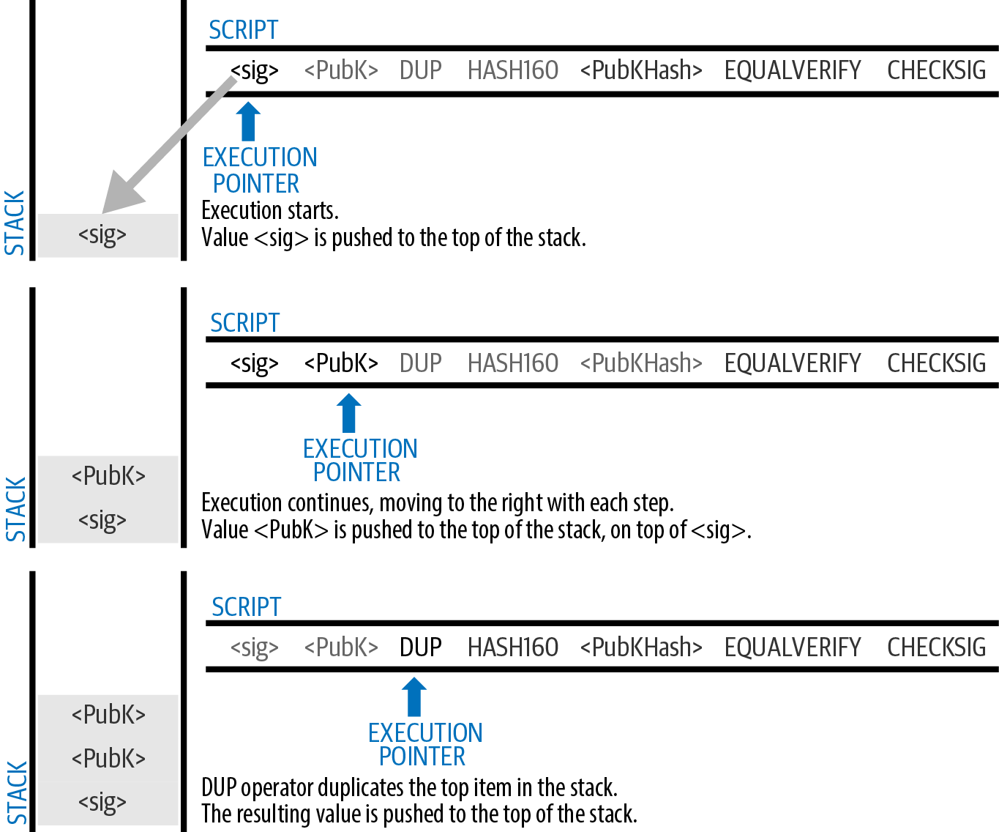
Digital Signatures (ECDSA)
A digital signature is a mathematical scheme for verifying the authenticity of digital messages or documents. A valid digital signature on a message gives a recipient confidence that the message came from a sender known to the recipient — Wikipedia
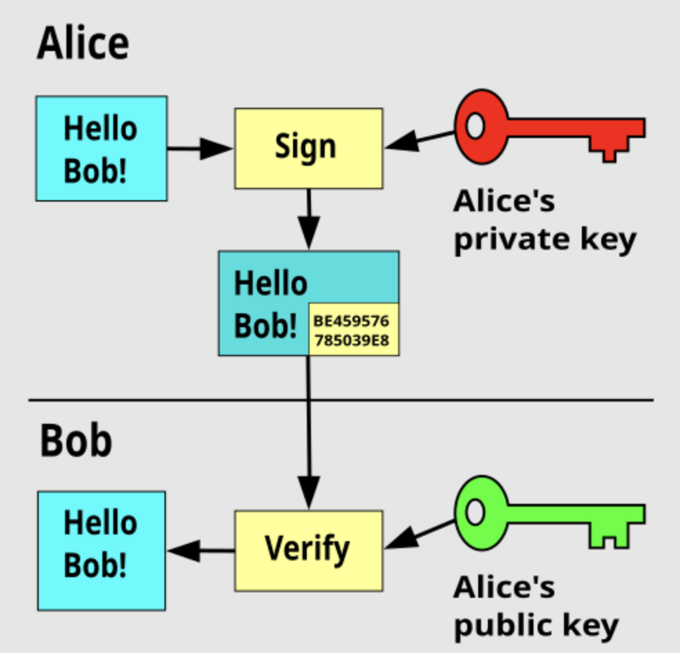
The digital signature used in bitcoin is the Elliptic Curve Digital Signature (ECDSA), and it is used by some script functions such as OP_CHECKSIG we saw above.
In bitcoin the signatures proves the ownership of a private key, so the authorization to spend the funds.
A digital signature is composed of two parts
- An algorithm to create a signature using the private key from a given message (or transaction)
- An algorithm to allow anyone to verity the signature given also the message and the public key
In math terms the signature is:
Sig = F_sig(F_hash(m),dA)
where:
dAis the signing private keymis the transaction (message)F_hashis the hashing functionF_sigis the signing algorithm
Sig at the end will be composed of two values R and S.
Sig = (R, S)
More in detail…
The signature algorithm generates a temporary private/public key pair which is based on a random number k. From k we generate the public key with the Formula P=k*G as we have seen already in a previous chapter.
The R value of the digital signature is the x coordinate of this new public key P.
From there the algorithm calculates the S value such that:
S = k⁻¹(Hash(m)+dA*R) mod(p)
where:
kis the temporary private keyRis the x coordinate of the temporary public key PdAis the signing private keymis the transaction data (message)pis the prime order of the elliptic curve
The signature verification algorithm takes the message, the signer public key and the signature and returns TRUE is the signature is valid for the message and public key.
The verification is the inverse, it uses R, S,k to calculate P which is a value on the elliptic curve (the temporary public key used before).
P = S⁻¹ * Hash(m) * G + S⁻¹ * R * Qa
where:
RandSare the signatures valueQais the real public key (not the temporary one)mis the transaction data that was signedGis the elliptic curve generator point
If the x coordinate of the calculated point P is equal to R then the verifier can conclude that the signature is valid.
If you’re curious about the validation of the algorithm please refer to Elliptic Curve Digital Signature Algorithm
The Bitcoin Network
Bitcoin is structured as a peer-to-peer (P2P) network, meaning there are no special nodes, servers or hierarchy. Every node is both a provider and a consumer of services at the same time.
Technologies that used the P2P network are for example Napster or BitTorrent.
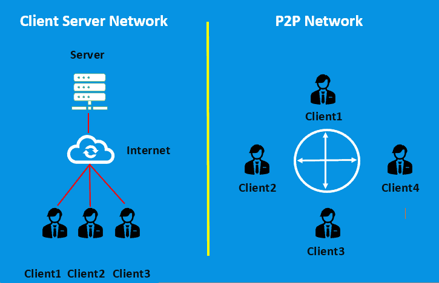
Although there are no hierarchy among the nodes, a node can take different roles such as:
- Routing
- Blockchain database
- Mining
- Wallet Service
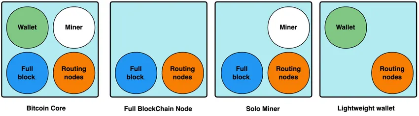
When a new node want to join the bitcoin network, it need to connect to at least one of the other nodes. It can choose one node at random since the topology of the network is not geographically defined.
How can a new node find new peers?
I can query a special DNS that provide a list of IP addresses of bitcoin nodes.
A node must connect to different peers to have a reliable connection to the network. Single nodes are not reliable, they come and go, that’s why a node needs to continuously find new peers.
Nodes will periodically send messages to peers to maintain the connection. If a node does not reply for more that 90 minutes is assumed to be disconnected. In this way the network dynamically adjusts and can grow and shrink without central control.
Full Nodes
The first thing a full node does when joining the network it to construct the entire blockchain history. At the beginning it only has the first or genesis block which is embedded in to the software itself.
The new full node will then download hundred of thousands of blocks. The full node will receive messages from its peers to know how many blocks they each have, and can compare with the number of blocks of his own blockchain.
The peer that has the longer blockchain has more blocks, and can send them to the other nodes for the to catch up.
Simplified Payment Verification (SPV) Nodes
Not all the nodes have the power to store the entire blockchain, some nodes might then use the SPV method and become lightweight clients.
SPV nodes download only the block header and not the transactions included in each block —> x1000 smaller blocks!
SPV then are not capable of reconstructing a picture of spendable UXTOs, because they don’t store transactions.
An SPV then cannot validate a transaction by knowing if the UXTO is unspent, but it can link the transaction to the correspondent block using a merkle path (we’ll see it later). Then the SVP waits unlit other 6 blocks are mined on top of the block containing the transaction, and if this happens can say that the transaction is validated.
Transaction Pools
Almost every node maintains a temporary list of unconfirmed transactions called memory pool, mempool, or transaction pool.
A wallet node for example, can use the mempool to track payment that have been received on the network but not yet confirmed.
If a transaction’s input refers to a transaction that is not yet known, such as a missing parent, it will be temporarily stored in the orphan pool, until the parent arrives.
The Blockchain
The blockchain is a list of linked blocks, each containing some transactions.
Blocks are linked, since each block refers to the previous block in the chain. You can visualise the blockchain also as a stack, in that case we use the terms height of a block, to refer to its distance from the block #0 or genesis block.
Each block is identified by a hash (SHA256), generated from the header of the block. The block reference to its parent block through the previous block hash field in the block header.
In other words, each block contains the hash of its parent inside its own header.
- *
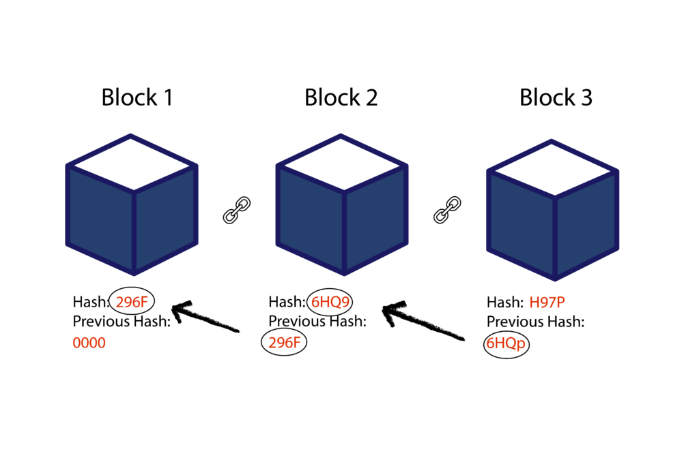
A block can have only one parent, but can have temporarily multiple children, and this happens when during a fork different blocks are mined almost simultaneously by different miners.
Eventually only of of the children becomes part of the chain, and the fork is resolved.
The previous block hash is embedded in the header of current block effecting its hash. In this way if an hacker modifies a transaction in a previous block it will change also its hash, and it won’t match with the hash of its following blocks, so we will know it.
The only way to hack this would be to change something in a block would be to recalculate and modify all the hashes of the latest blocks, which is computationally very expensive then not possible.
Structure of a Block
- Header: containing metadata (80 bytes)
- reference to previous block hash
- difficulty, timestamp, nonce → related to mining competition
- Merkle tree → summary of all transaction in the block
- List of transactions: on average 1900 (400 bytes each on avg)
A block can be identified either by its hash, or its height in the chain.
The first block in the chain is called genesis block and was created in 2009.
A Bitcoin full node maintains a local copy of the entire blockchain, which is updated continuously.
Merkle Trees
Also known as binary hash tree, is a summary of all the transactions contained in a block.
Merkle trees produce a digital fingerprint (SHA256) of the entire set of transactions of a block, producing an efficient way to check if a given transaction is included in a block.
The merkle tree is constructed bottom-up. Suppose we have four transactions: A,B,C and D. These are the leaves of our tree.
The transactions are not stored in the tree, but we hash their data and store the resulting hash: H_A,H_B,H_C and H_D.
H_A = SHA256(SHA256(A))
Consecutive pairs of leaf nodes are concatenated and then hashed together, to form their parent node.
H_AB = SHA256(SHA256(H_A+H_B))
The process continue until we get only one node, known as the markle root.
The hash of the root, 32 bytes, is stored in the block header and summarises all the data in all four transactions.
Note that even with thousands of transactions, the final hash size will always be 32 bytes.
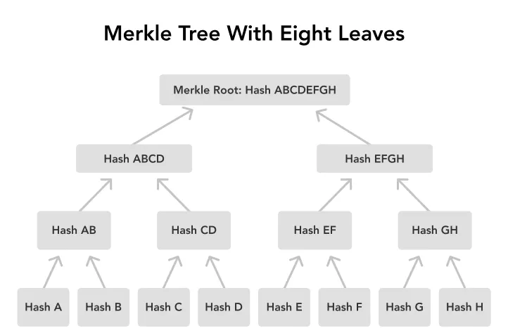
Since this is a binary tree with N leaves, its height is always be log(N) → Binary tree
So to understand if transaction E (see the picture) is in the block, I need to recompute only its path to the root, only 3 hashes!
SPV nodes, that don’t maintain the blockchain locally, can verify transaction checking merkle paths.
Mining and Consensus
Mining is the mechanism by which transactions are validated and makes the emergence of consensus without a central authority.
A new block is mined on average every 10 minutes, a transaction included in a mined block is considered confirmed.
Miners get two types of reward:
- sum of transaction fees included in the mined block
- new coins created from scratch (currency issuance)
Miners are rewarded for their work on finding a solution to a complex math problem : Proof of Work. (The solution is included in the block)
Miners reward decreased every 4 years. By 2140 their reward will only be made of transactions fees.
Every 210.000 blocks (or 4 years) the currency issuance rate decreases by 50%.
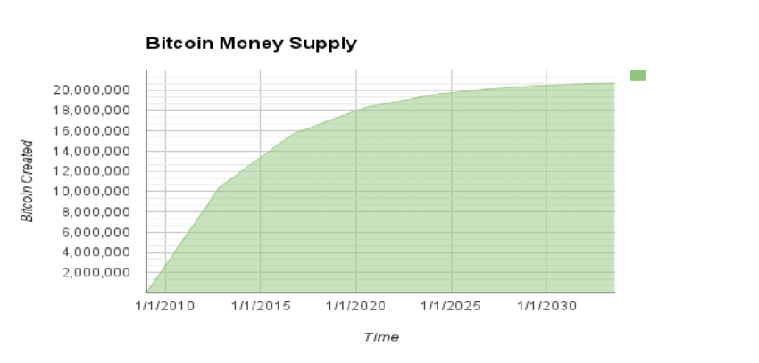
The blockchain is a global public ledger (list) of transactions. But how can everyone in the network agree on the same universal truth, without relying on a central authority such as a bank ❓
The main innovation that this technology brings is the emergent consensus.
Consensus is an emergent artefact of the asynchronous interaction of thousands of independent nodes, all following simple rules:
- Independent verification of each transaction by full nodes
- before forwarding transactions to its neighbors, every node verifies the transaction against a long checlist of criteria (e.g syntax must be correct), to ensure only valid transactions are propagated through the network
- Independent aggregation of those transactions into new blocks by mining nodes
- Miners build candidate blocks with unconfirmed transactions. If a node is collecting transactions for block #315 (after block #314), but receives a mined block #315 from another node, it stops and starts mining block #316.
- Independent verification of the new blocks by every node and assembly into a chain
- After validating a tx, a node will add it to the memory pool or transaction pool until it gets mined.
- Independent selection, by every node, of the chain with most cumulative computation (longest one)
Proof of Work
The process of mining consist of hashing a block header repeatedly, changing one parameter, until the result matches a specific target.
Since the result of a hash function cannot be predicted, the only way to do so is try try over and over again.
The key characteristic of a cryptographic hash algorithm is that it is computationally infeasible to find two different input that produce tha same fingerprint (result), known as collision.
If I slightly change the input data of a hash function, the output changes completely.
Hash("my name is Marcello Politi-1") --> "a591a6d40bf420404a011733cfb7b190d62c65bf0bcda32b57b277d9ad9f146e"
Hash("my name is Marcello Politi-2") --> "7d1e3ed9e1e3b6e4a9d0b7a7f8c2e4b8a8b4c1e2d2f3a5b6c7d8e9f0a1b2c3d4"The variable number (as in the example above) is called nonce.
Let’s set the target of this game. We want to find a hash hexadecimal number that starts with 0.
Hash("my name is Marcello Politi-1") --> "a591a6d40bf420404a011733cfb7b190d62c65bf0bcda32b57b277d9ad9f146e"
Hash("my name is Marcello Politi-2") --> "7d1e3ed9e1e3b6e4a9d0b7a7f8c2e4b8a8b4c1e2d2f3a5b6c7d8e9f0a1b2c3d4"
...
...
...
Hash("my name is Marcello Politi-16") --> "0e884898da28047151d0e56f8dc6292773603d0d6aabbdd62a11ef721d1542d8"Found! It took me 16 trials!
Since the output of a hash function is evenly distibuted, we would expect that on average we find an hash starting with 0 every 16 trials. (Since the first number has a range from 0 to 16).
If we want to make the game more difficult we can set the target as a number starting with two zeros, or even more. In that case we expect on average every 256 trials. So if a device succeeds, we are sure it has done some work! Hence, Proof of Work!
The protocol wants that a miner “wins” on average every 10 minutes, so as soon as the hardware capacity increases, and miners find solutions faster, the protocol can change the target and make the game more difficult, keeping the average of 10 minutes.
In bitcoin the miners use the block header instead of the string “my name is Marcello Politi”.
Since mining become so competitive, a solo miner doesn’t stand a chance. That’s why miners can collaborate in what is called a mining pool, and share their hashing power, together with the reward.
Consensus Attack
The main relevant attack scenario is called the 51% attack. This means that a group of miner controls the majority of the total network hashing power (which is practically unlikely since the network is huge), and they collude to attack the consensus mechanism.
This group could deliberately create forks in the blockchain and perform double spending. Lets see a concrete example.
The attacker Marcello buys a car from a seller called Davide for 10 BTC.
Davide doesn’t wait for that other 6 blocks are mined on top of the block that validated Marcello’s transaction, and gives the car’s key to Marcello which immediately leaves.
Cristiano, which is Marcello accomplice and controls 51% of the network hashing power, mines a new block at the same height of the block that contains Marcello’s transaction, creating then a fork.
In this new block Cristiano replaces the Marcello’s transaction with the Davide’s payment with a new payment that goes back to Marcello himself.
Then Cristiano starts mining new blocks on top of this new forked block, making this secondary chain longer than the main one, which then actually becomes the main chain.
Now Davide is missing is payment and doesn’t have the car no more.
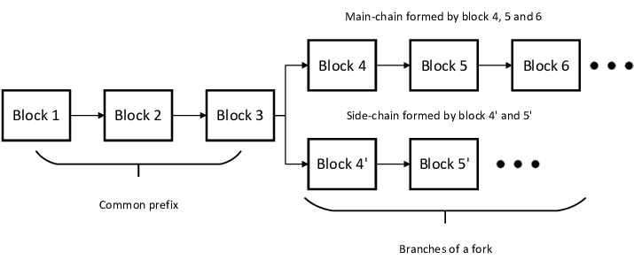
Hard and Soft Forks
A hard fork is the scenario in which the participants of the network, split into following two chains.
This because in the new chain the consensus rules have changed completely and so the network is operating differently. The two chain in this case will evolve independently and won’t merge anymore.
Not all consensus rule changes cause hard fork, only those that are not forward-compatible.
If a new fork implements new rules, but old clients still see new mined block as valid, we call the this a soft-fork.
So transactions and blocks created under the new rules must be valid under the old rules too, but not vice versa.
Blockchain Applications
Bitcoin is a decentralised currency system, but the underline technology, the blockchain, is a tool that offers a trust service. that can be used to develop other applications for different use cases. For example smart contracts surpass the original purpose of the digital currency and make possible the development od decentralised application.
Colored Coins
Colored coins is a technology that uses bitcoin transactions to record ownership of extrinsic assets. By extrinsic we mean assets that are not store directly in the blockchain like bitcoin themself but could be for example physical assets like stock certificates, game items, copyrights, licenses etc.
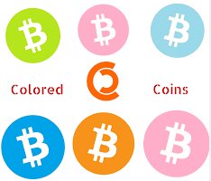
The idea is to mark or “coloring” a small amount of bitcoin, also a single satoshi, that represents something else other than the solely bitcoin value.
Imagine like having a stamp on a 1bill, saying “this is a stock certificate for Apple”. That single bill now has a value that goes beyond 1.
The first implementation of colored coins is Enhanced Padded Order Based Coloring or EPOBC.
Color coins ar not visibile to general-purpose blockchain explorer and wallet, but you need special explorers and wallet that are capable of interpreting the transaction metadata to recognise the colored coins.
The process of creating colored coins is called issuance. An initial transaction, the issuance transaction, register the assets on the bitcoin blockchain and created an assedID. Once issued, asssets can be transferred between addressed with normal transactions.
Lightning Network
Think of Bitcoin’s blockchain as a public ledger where every payment gets logged. It’s secure but slow, taking about 10 minutes per entry, and fees can pinch. The Lightning Network is like a fast, cheap sidekick that lets you use Bitcoin for quick purchases, like at a coffee shop, without always writing in that ledger.
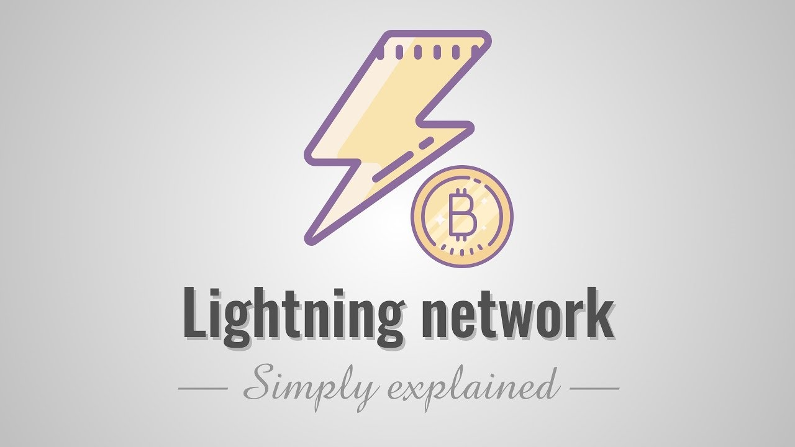